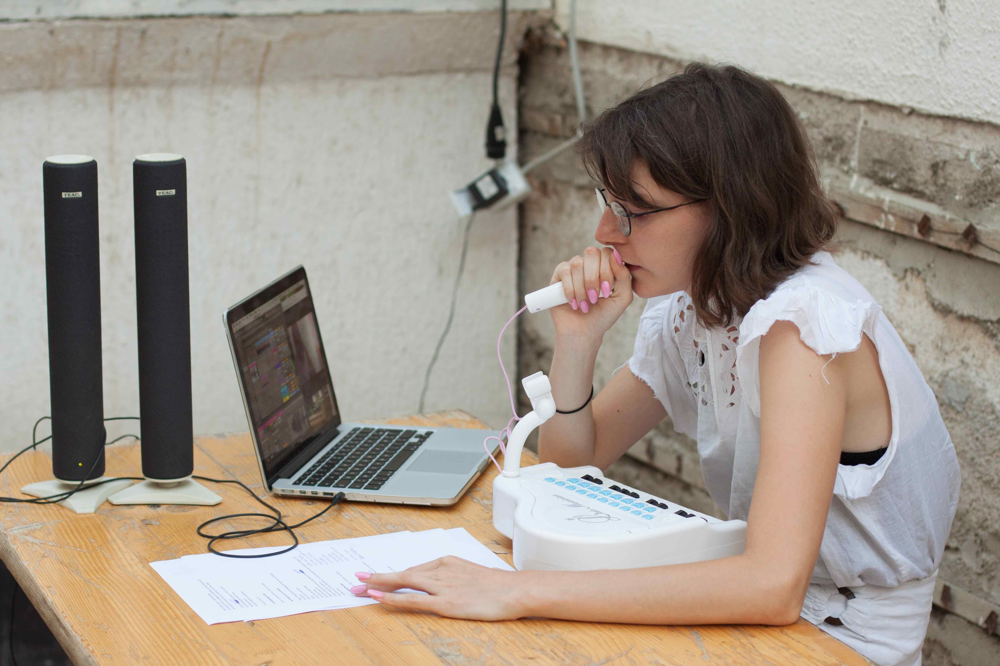
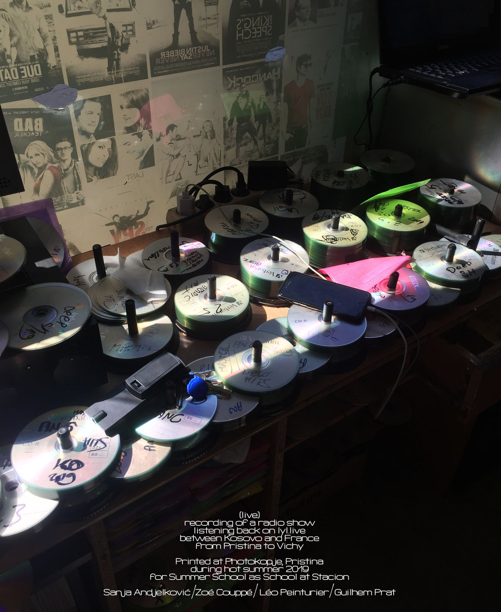
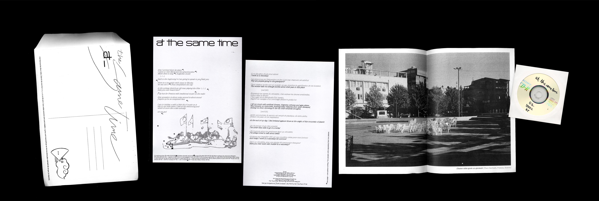
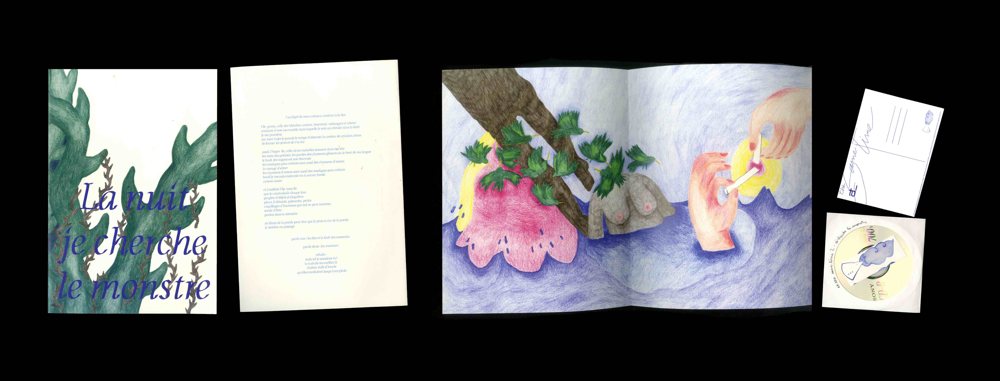
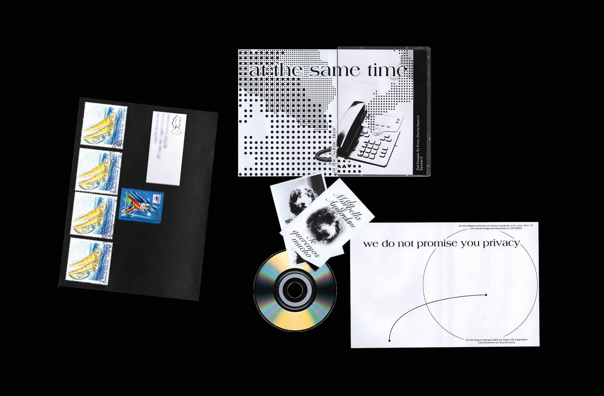
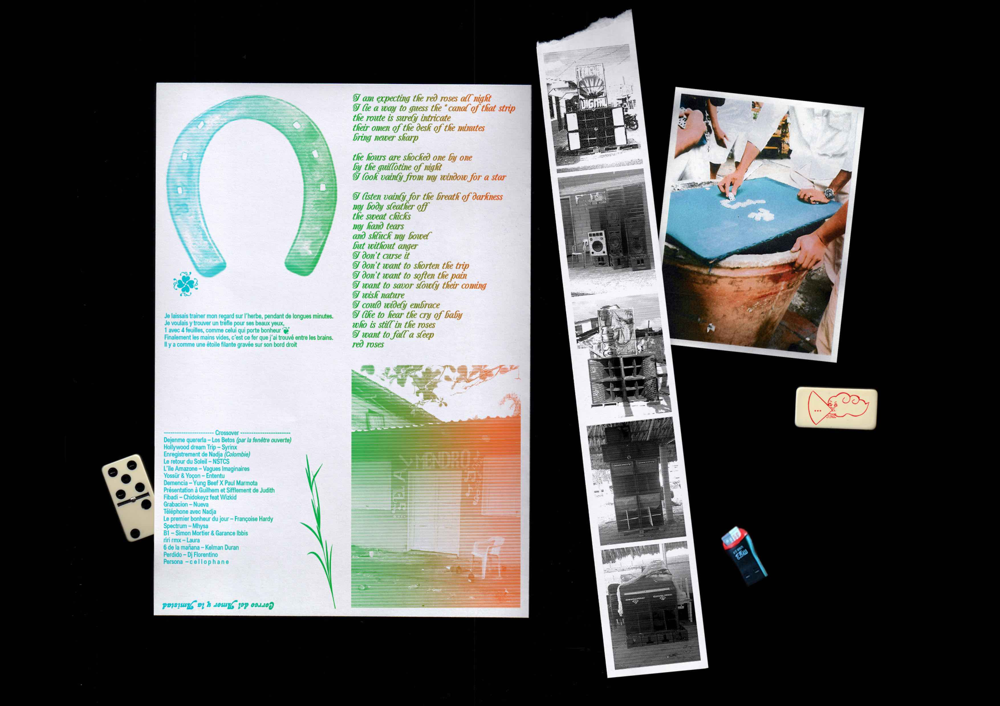
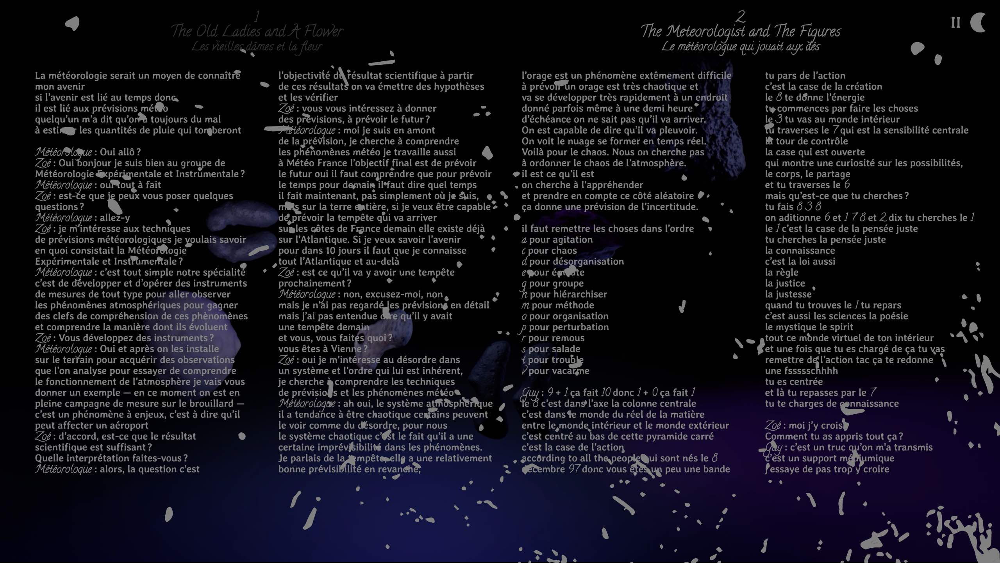
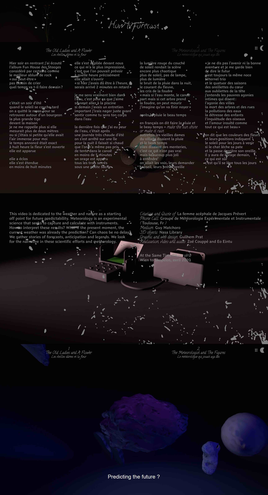
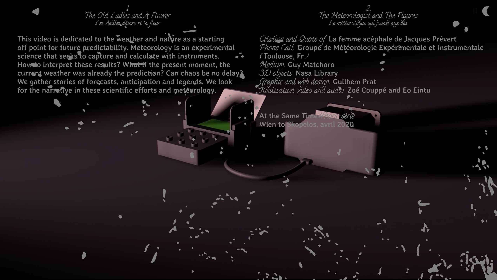

|
 |  |  At the same time — From Pristina to Vichy (épisode 1) Enregistrement radio à distance. 20 août 2019, Stacion, Kosovo (CD accompagné d’un feuillet, 297 x 420 mm plié) |
 At the same time — Cela est certain (épisode 2) Texte écrit et lu par Zoé Couppé dans l’émission, illustré dans l’édition par Anna Sougy [Spazz] Née de l’attention à notre environnement sonore quotidien. Clins d’oeil et jeux de mots : histoires racontées, inventées, piochées. Dans ces lignes il y a les mots de Jean Tardieu, Robert Desnos et Jaqueline Held qui ce sont glissés dans nos souvenirs. Est ce que ce sont des citations ou un hommage ? (CD accompagné d’un feuillet, 297 x 840 mm plié) |
 At the same time — We do not promise you privacy (épisode 3) Conception graphique : Charles Duminil [Spazz] (mini-CD et jacket) |
 At the same time — Correo del Amor (épisode 4) Conception graphique : Guilhem Prat [Spazz] (microSD+USB, domino, impressions format divers) |
 At the same time — How to forecast ? (hors-série) Errance dédiée au temps et à la nature comme point de départ pour prédire l'avenir. Un visionnage de 15 minutes sans déplacement temporel possible. Émission de radio vidéo produite par Zoé et Léo habillée par Guilhem [Spazz] (site web) |
 |  |